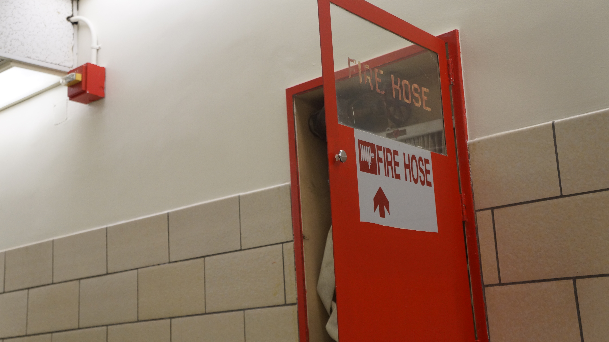

Above is my first image. The photo feels a bit washed out and the subject isn't very eye catching for any other reason than its color.

Above is my second image. The composition is great and the strings of the piano make the photo more compelling.